PokémonEMMA'S EMERALD
OFFICIAL Strategy Guide
Shoal Cave Low Tide Ice Room
‹ Shoal Cave Low Tide Inner RoomQuest: Shoal Cave and the tides (6 badges, LV35–50) · 4 of 4Back to the side quests ›
TIP
Wild Pokémon here are LV26–32. Time of day: M = morning (6–10), D = day (10–19), E = evening (19–20), N = night (20–6).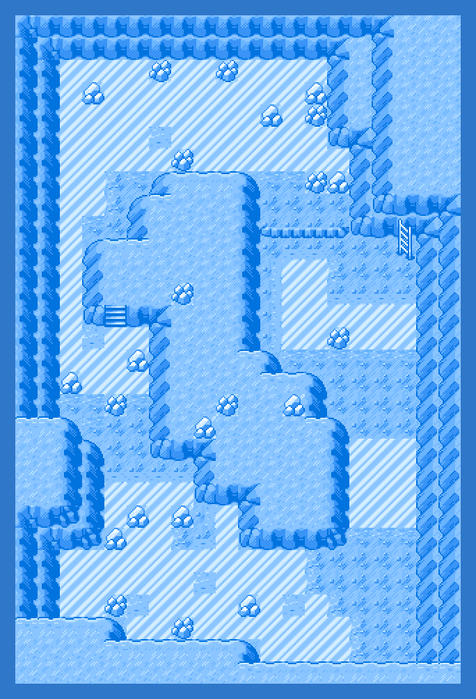
Event 1: Ice room
The frozen floor at the very bottom. A Never-Melt Ice in the corner, and Articuno (seven badges, level 45).
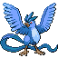
Legendary Pokémon here
Static encounters: walk up and press A. Caught = gone for good; beaten or fled = back next visit.
Catch ’Em All! Grass & caves
 | Zubat: | LV26 | Common | MDEN |
 | Spheal: | LV26 | Common | MDEN |
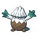 | Snover: | LV29–31 | Uncommon | MDEN |
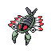 | Anorith: | LV26–28 | Uncommon | MDEN |
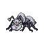 | Durant: | LV28–30 | Uncommon | MDEN |
| Aron: | LV27–28 | Uncommon | MDEN | |
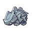 | Rhyhorn: | LV31–32 | Uncommon | MDEN |
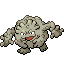 | Graveler: | LV26 | Uncommon | MDEN |
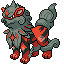 | Hisuian Arcanine: | LV29–30 | Uncommon | MDEN |
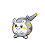 | Togedemaru: | LV27–28 | Uncommon | MDEN |
 | Mimikyu (Disguised): | LV29–30 | Uncommon | MDEN |
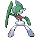 | Gallade: | LV28–30 | Uncommon | MDEN |
 | Rotom: | LV27–28 | Uncommon | MDEN |
 | Inkay: | LV26 | Uncommon | MDEN |
 | Smoochum: | LV26–27 | Uncommon | MDEN |
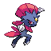 | Weavile: | LV28–30 | Uncommon | MDEN |
 | Haunter: | LV27 | Uncommon | MDEN |
 | Galarian Corsola: | LV30 | Uncommon | MDEN |
 | Shieldon: | LV31–32 | Uncommon | MDEN |
 | Lunatone: | LV30–32 | Uncommon | MDEN |
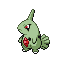 | Larvitar: | LV28–30 | Uncommon | MDEN |
 | Minior (Meteor Red): | LV30–32 | Uncommon | MDEN |
 | Klefki: | LV29–31 | Uncommon | MDEN |
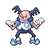 | Mr (Mime Galar): | LV26–28 | Uncommon | MDEN |
 | Duskull: | LV30–31 | Uncommon | MDEN |
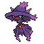 | Mismagius: | LV29 | Uncommon | MDEN |
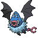 | Swoobat: | LV29–31 | Rare | MDEN |
 | Solrock: | LV28–30 | Rare | MDEN |
 | Onix: | LV29 | Rare | MDEN |
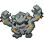 | Alolan Graveler: | LV29–31 | Rare | MDEN |
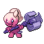 | Tinkatuff: | LV29–31 | Rare | MDEN |
 | Mawile: | LV30 | Rare | MDEN |
 | Yamask: | LV26–27 | Rare | MDEN |
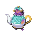 | Polteageist (Phony): | LV27–28 | Rare | MDEN |
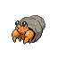 | Dwebble: | LV31–32 | Rare | MDEN |
 | Bronzor: | LV29–31 | Rare | MDEN |
 | Lileep: | LV31–32 | Rare | MDEN |
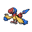 | Archen: | LV31 | Rare | MDEN |
 | Hatenna: | LV31 | Rare | MDEN |
 | Dreepy: | LV29–30 | Rare | MDEN |
 | Shuppet: | LV29–30 | Rare | MDEN |
 | Greavard: | LV29–31 | Rare | MDEN |
‹ Shoal Cave Low Tide Inner RoomQuest: Shoal Cave and the tides (6 badges, LV35–50) · 4 of 4Back to the side quests ›
127
Side Quests